4．黎曼的继承者
当黎曼1854年的文章在他逝世后两年（即1868年）刊行时，激起了强烈的兴趣，许多数学家忙着去充实他所概述的思想并加以推广。黎曼的直接继承者是贝尔特拉米（Eugenio Beltrami）、克里斯托费尔（Elwin Bruno Christoffel）和利普希茨（Rudolph Lipschitz）。
贝尔特拉米（1835—1900），是波洛尼亚和意大利其他大学的数学教授，他知道黎曼1854年的文章，但是不知道他1861年的文章，他还在研究把ds2的一般表达式化成形式（14）的证明问题(14)，而形式（14）是黎曼已对常曲率空间给出了的。除这个结果以及证明了黎曼的其他几个论断以外，贝尔特拉米还研究了将在下节考虑的微分不变量的课题。
克里斯托费尔（1829—1900）先是苏黎世后是斯特拉斯堡的数学教授，他推进了黎曼那篇文章中的思想。克里斯托费尔在他的两篇关键性文章(15)中主要关心的是重新考虑和详细论述黎曼在他1861年文章中已经稍为粗略地讨论过的题目，那就是一个形式
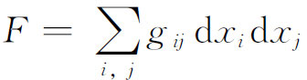
在什么时候能够变成另一个形式
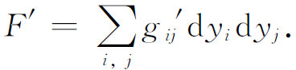
克里斯托费尔寻找它的必要充分条件。在这篇文章中，他附带地引进了克里斯托费尔记号。
让我们首先考虑二维的情形，在这里
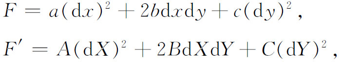
并假定x和y可以表示成X和Y的函数，使得在这变换下F变成F′。当然，
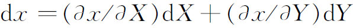
。现在，当F中的x，y，dx和dy代以相应的X和Y的表达式，并让F的这个新形式中的系数和F′的对应系数相等时，就得到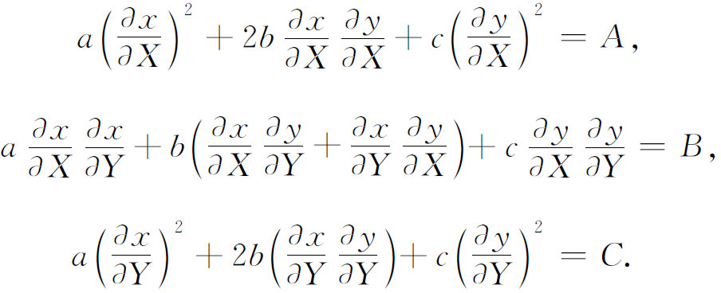
对于x和y作为X和Y的函数，有三个微分方程。如果它们能够解出来，那我们就知道如何把F变成F′了。然而，其中只含有两个函数。于是，以a，b和c为一方，以A，B和C为另一方，它们之间必定有某些关系。通过微分上面三个方程和一些代数步骤，就发现这关系是K＝K′。
对于n元的情形，克里斯托费尔用的是同一个方法。他从
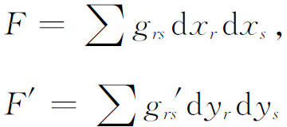
出发。变换是
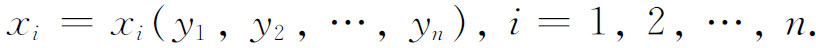
他让
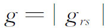
。如果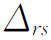
是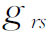
在行列式里的余子式，就让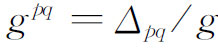
。像黎曼一样，他独立地引进了四指标记号（没有逗点）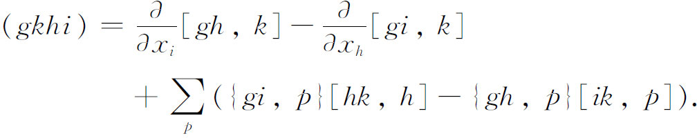
然后他推出关于xi作为yi的函数的n（n＋1）/2个偏微分方程。有代表性的一个是
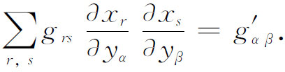
这些方程是使F＝F′的变换存在的必要充分条件。
部分是为了讨论这组方程的可积性，部分是由于克里斯托费尔愿意考虑dxi的高于两次的形式，所以他作了许多微分和代数推导，证明了
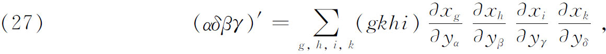
其中α，β，γ和δ取1到n的所有值。总共有
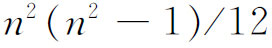
个这种形式的方程。这些方程是两个四阶微分形式等价的必要充分条件。确实，设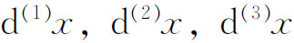
，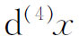
是x的四组微分，对y也照样有四组微分。如果有四线性形式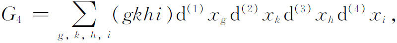
则关系式（27）是
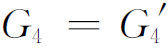
的必要充分条件，其中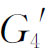
是诸y变元的类似于G4的形式。这个理论可以推广到μ重微分形式。事实上，克里斯托费尔引进了
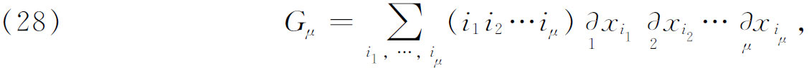
其中括号里的项几乎与四指标记号一样是用
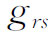
来定义的，记号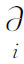
是用来把xi的微分组同以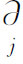
作用所得的微分组区别开来。然后他证明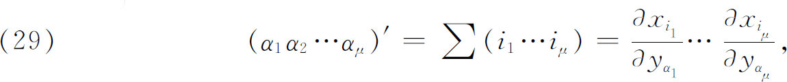
并得到
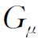
可以变成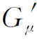
的必要充分条件。接着，他给出从一个μ重形式Gμ导出一个（μ＋1）重形式的一般方法。关键的一步是引进
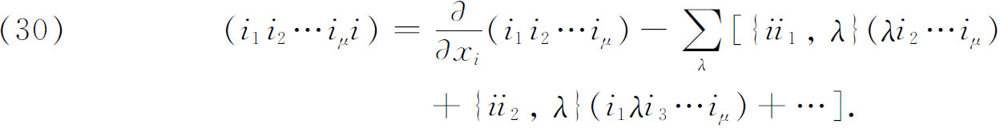
这些（μ＋1）指标记号是Gμ＋1形式的系数。克里斯托费尔在这里用的方法，就是后来里奇-库尔巴斯特洛（Gregorio Ricci-Curbastro）和列维-齐维塔（Tullio Levi-Civita）所谓的协变微分（第48章）。
克里斯托费尔关于黎曼几何只写了一篇关键性的文章，而波恩大学的数学教授利普希茨，从1869年起在《数学杂志》上却写了大量文章。虽然他对贝尔特拉米和克里斯托费尔的工作作了某些推广，但主要的题目和结果跟他们两人是相同的。关于黎曼和欧几里得n维空间的子空间他却给出了某些新的结果。
由黎曼创始并由他的三位直接继承者所发展的思想，在欧几里得微分几何和黎曼微分几何两方面都提出了大批新问题。特别地，在三维欧几里得情形已经得到的结果，被推广到n维中的曲线、曲面和较高维的形式。在这许多结果中我们将只引述一个。
1886年，弗里德里希·舒尔（Friedrich Schur，1856—1932）证明了一个后来以他名字命名的定理(16)。根据黎曼提出曲率概念的思路，弗里德里希·舒尔讲到空间的一个定向的曲率。这种定向由一束测地线μα＋λβ确定，其中α和β是从一点出发的两条测地线的方向。这个束构成一个曲面并且有一个高斯曲率，弗里德里希·舒尔称之为这个定向的黎曼曲率。他于是断言，如果空间的黎曼曲率在每一点都同定向无关，则黎曼曲率在全空间是常数。因此，这种流形是一个常曲率空间。